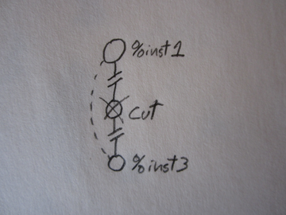
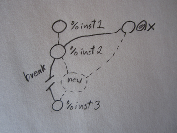

llvm-mutate – mutate LLVM IR
Table of Contents
1 Introduction
LLVM Mutate is an LLVM compilers pass [1]. Like all compiler passes, it manipulates LLVM intermediate representation (IR), but unlike most compiler passes it explicitly does not preserve semantics. Instead it provides a number of simple mutation operations which may be specified through command line flags. These operations are more similar to genetic programming [2] or mutation testing [3] operations than they are to traditional compiler transformations.
Mutation Operations
| ids | prints the total number of instructions |
| list | lists each instruction with its type and its assigned id |
| name | names each instruction (using LLVM's Value.setName) |
| trace | instrument to trace all executed instructions |
| cut | removes the numbered instruction from the program |
| insert | copies the second numbered instruction before the first |
| replace | replace the first numbered instruction with the second |
| swap | swaps the two numbered instructions |
The llvm-mutate shell script wraps this compiler pass in a simple
interface which facilitates program manipulation. See the examples
and the help output [4]
To support application of these simple operations some surgery must be performed on the data dependency graph to both (1) replace the use of removed instructions, and to (2) fully incorporate added instructions.
| 1. Removed instruction. | 2. Added instruction. |
|  |  |
2 Installation
- Copy or clone this repository [5] to
llvm/lib/Transforms/Mutatein your LLVM source tree, - Run
makefrom within the Mutate directory. See [1] for more information on building LLVM compiler passes. - Place the
llvm-mutatescript in your path. It may be necessary to set theLLVMenvironment variable to the base of your LLVM install so that thellvm-mutatescript can load theMutate.soshared library (Note: if you re-install LLVM after adding this repository to the Transforms directory setting theLLVMenvironment variable should not be necessary).
3 Examples
Examples
First compile a source file to LLVM assembly.
$ echo 'main(){ puts("hello"); puts("goodbye");}' \
|clang -x c - -S -emit-llvm -o greet.ll
See the behavior of the original.
$ cat greet.ll|./llvm-mutate -l
$ ./a.out
hello
goodbye
Count the instruction ids in the original program.
$ cat greet.ll|./llvm-mutate -I -o /dev/null
3
Compile a version which saves an instruction execution trace
$ cat greet.ll|llvm-mutate -t -l
$ ./a.out
hello
goodbye
$ cat llvm_mutate_trace
1
2
3
Cut the first instruction from this program, compile and run.
$ cat greet.ll|./llvm-mutate -c 1 -l
cut 1
$ ./a.out
goodbye
Insert the second instruction before the first.
$ cat greet.ll|./llvm-mutate -i 1,2 -l
inserted 2 before 1
$ ./a.out
goodbye
hello
goodbye
Swap the first two instructions.
$ cat greet.ll|./llvm-mutate -s 1,2 -l
swapped 1 with 2
$ ./a.out
goodbye
hello
We can also look at a slightly more complicated file which actually has some data dependencies between instructions. Dependencies which the mutation tool will need to address.
$ make arith.ll
$ cat arith.ll|./llvm-mutate -l
$ ./a.out
25
Here mutations will change the data dependencies between the
instructions, and effect the value of x which is printed at the
end.
$ cat arith.ll|./llvm-mutate -c 4 -l
found local replacement: 0x2ac0aa8
cut 4
$ ./a.out
4
$ cat arith.ll|./llvm-mutate -c 3 -l
cut 3
$ ./a.out
9
$ cat arith.ll|./llvm-mutate -c 6 -l
found local replacement: 0x39aaaa8
cut 6
$ ./a.out
10
The compiler pass attempts to plug new instructions into the call graph near where they are inserted, satisfying their arguments with in-scope variables and plugging their output into the arguments of subsequent variables.
$ cat arith.ll|./llvm-mutate -i 6,9 -l
replacing argument: 0x2f6ce50
found local replacement: 0x2f6cae8
inserted 9 before 6
$ ./a.out
4
When this isn't possible, a warning is printed and the insertion likely has no effect.
$ cat arith.ll|./llvm-mutate -i 4,10 -l
could find no use for result
inserted 10 before 4
$ ./a.out
25
Unless of course the inserted instruction acts through side effects. For example this copies the printf instruction into the middle of the function.
$ cat arith.ll|./llvm-mutate -i 4,11 -l
replacing argument: 0x1e34f88
found local replacement: 0x1e34ae8
inserted 11 before 4
$ ./a.out
2
25
See the output of llvm-mutate --help for more actions which may
be performed on compiled llvm IR. If multiple options are given to
llvm-mutate they will be applied in series to the code. So for
example the following command line will,
$ cat arith.ll|./llvm-mutate -I -g -G -c 3 -I -i 4,10 -I -G -l
12
cut 3
11
replacing argument: 0x1d7df08
found local replacement: 0x1d7db80
inserted 10 before 4
12
$ ./a.out
3
9
- print a count of instruction ids,
- generate the program control flow graph
(shown on screen if
dotandfehare installed), - generate the program call graph
- cut an instruction,
- print another id count,
- inserts an instruction,
- prints a third instruction id count,
- display the new call graph
- and finally link the resulting LLVM IR into an executable.
4 License
Licensed under the GPLV3, see the COPYING file in this directory for more information.
Footnotes:
Help information for the llvm-mutate script.
llvm-mutate --help
llvm-mutate -[n|l|g|G] -[c|i|s instructions] -l -[o path] mutate llvm IR Options -I,--ids -------- print the number of instructions -L,--list ------- list instructions with number and types -n,--name ------- name each instruction w/number -g,--cfg -------- graph the CFG -G,--call-graph - graph the call graph -c,--cut -------- cut the given instruction -r,--replace ---- replace the first inst. with the second -i,--insert ----- copy the second inst. before the first -s,--swap ------- swap the given instructions -l,--link ------- link the result into an executable -o,--out -------- write output to specified file